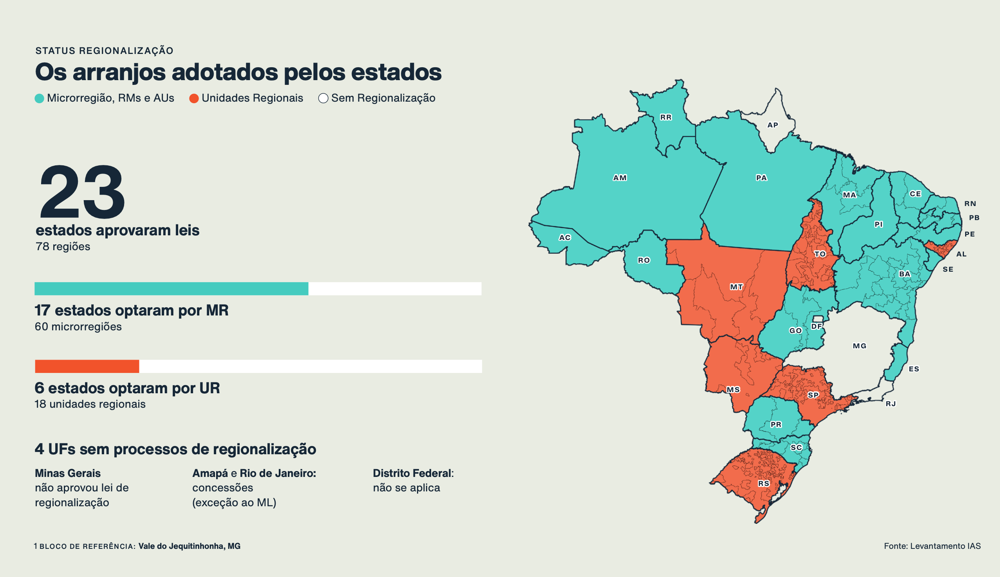
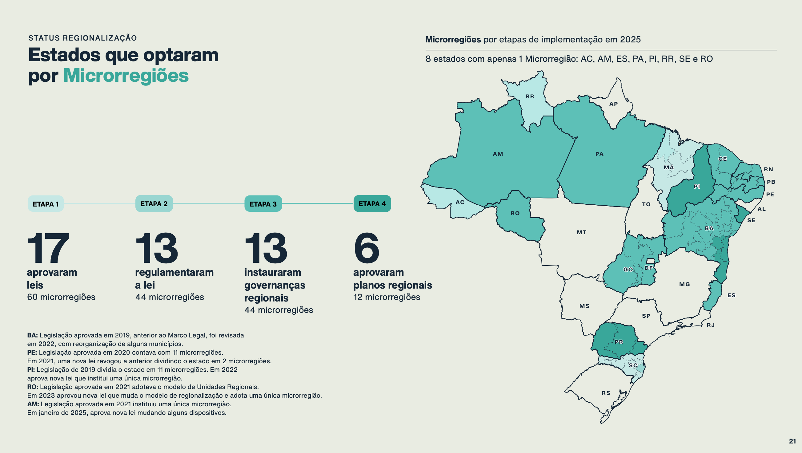
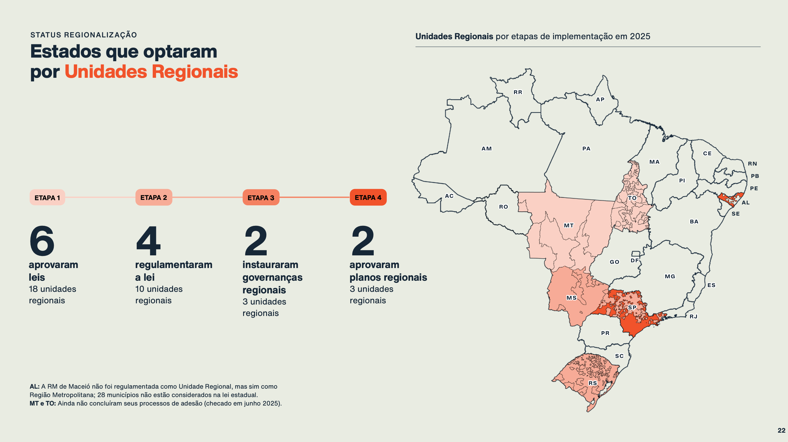
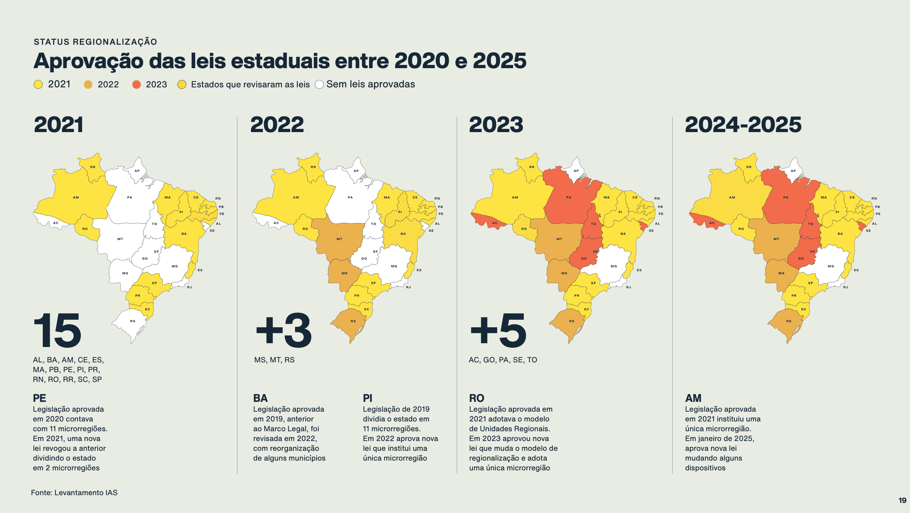
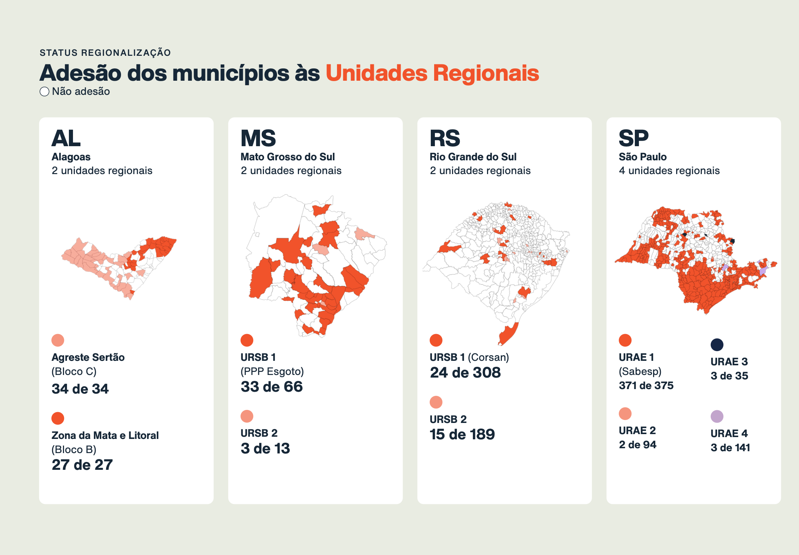
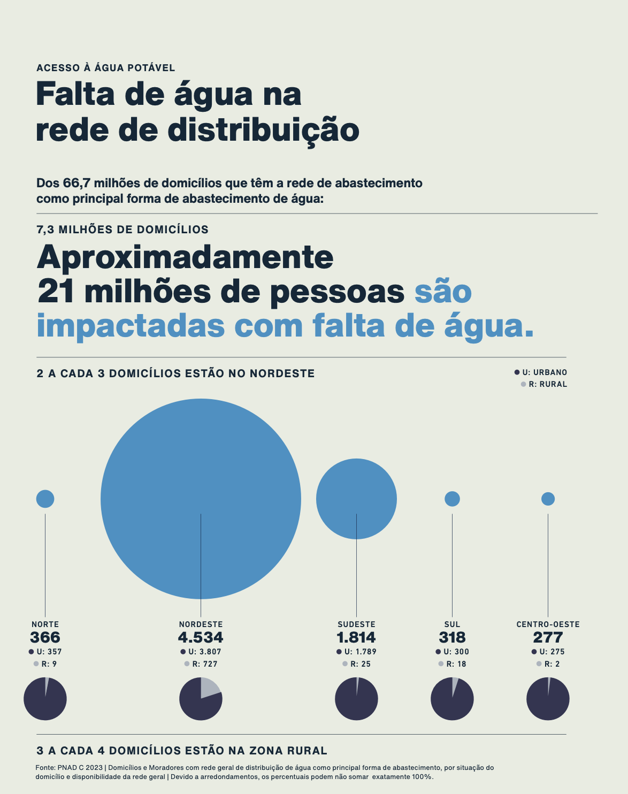
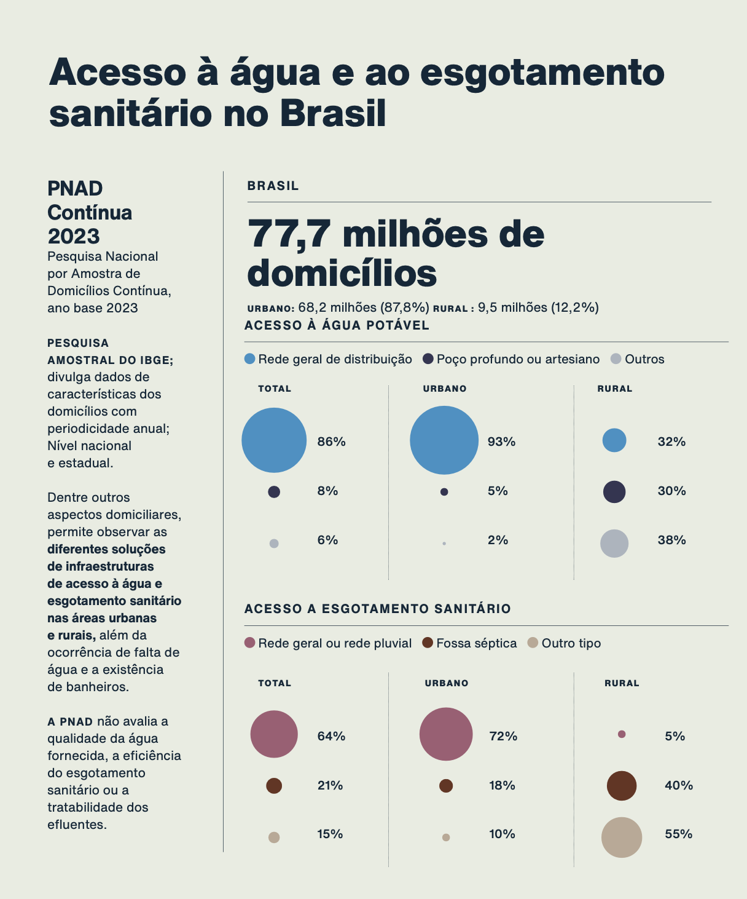
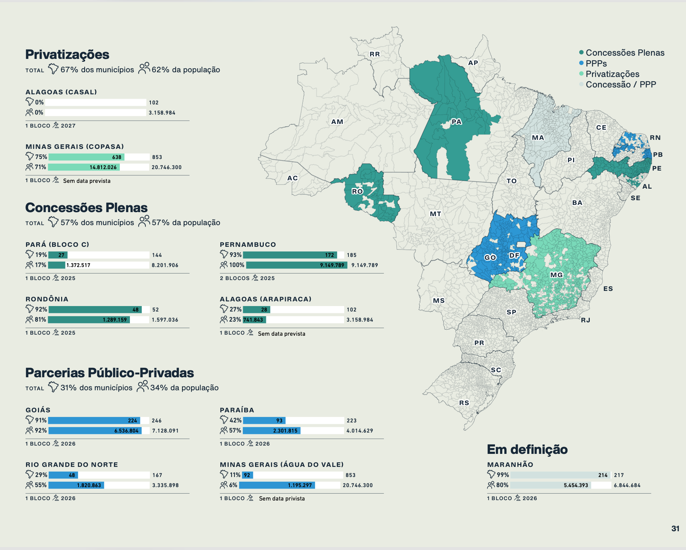

Report
Relatórios, publicações e projetos de visualização de dados em colaboração com o Estúdio Nono + IAS (Instituto de Água e Saneamento).








Relatórios, publicações e projetos de visualização de dados em colaboração com o Estúdio Nono + IAS (Instituto de Água e Saneamento).







